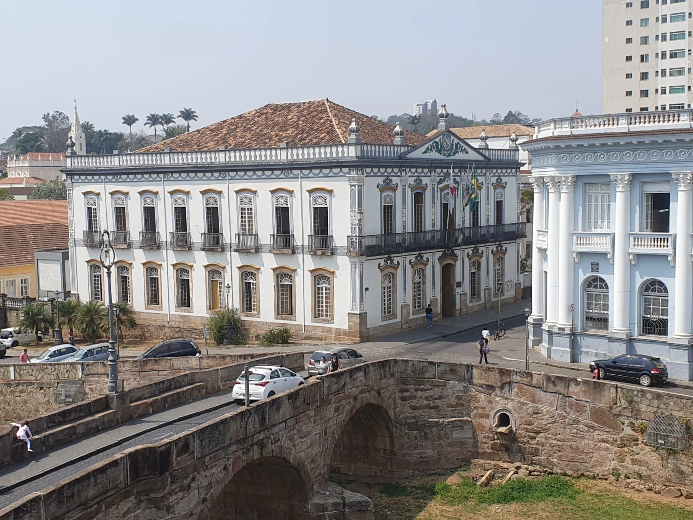
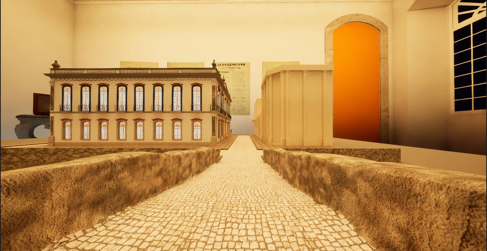
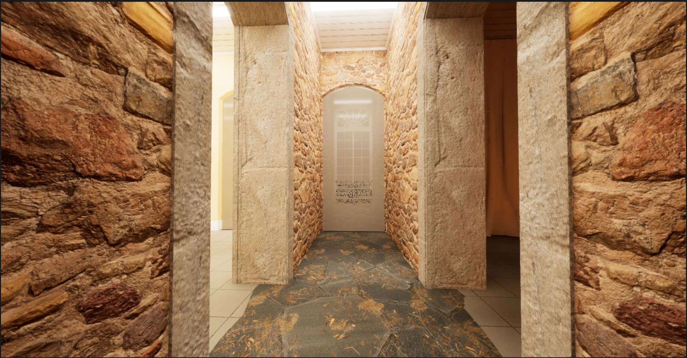
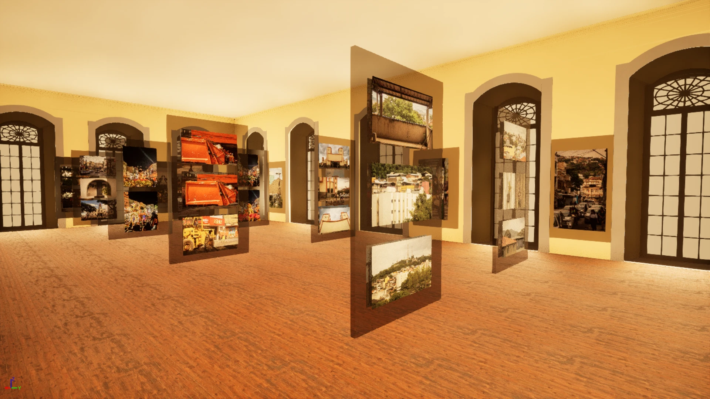
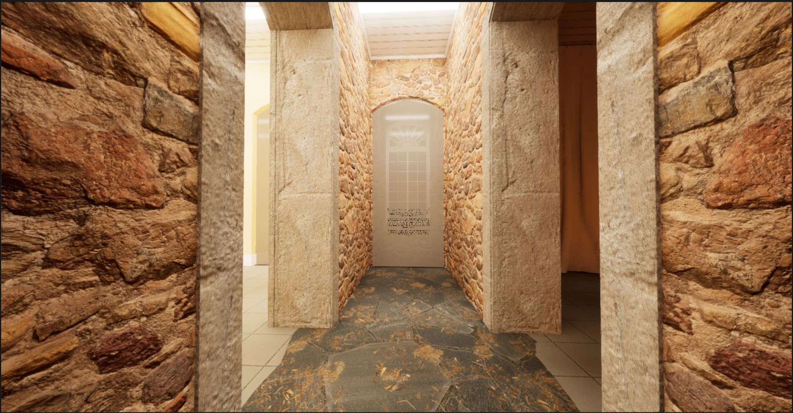
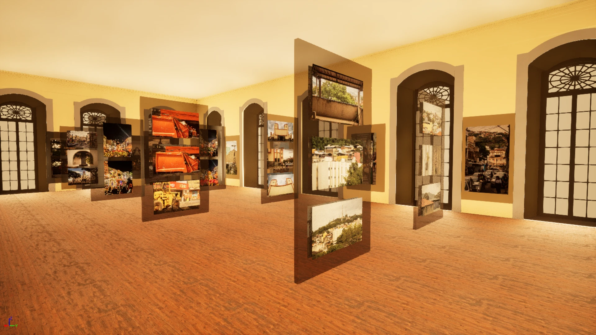

vsrc_ thesis
Intro
Digital technologies have revolutionized the recording and documentation of historical heritage. However, these records are still not easily accessible to the general public, remaining restricted to specialists. This work proposes to disseminate this information and preserve historical heritage.
The focus is on creating a digital model of the former House of Council and Jail(Casa da Câmara e Cadeia) of São João del-Rei, using the BIM platform. This model will serve as a digital representation of the historical monument.
Next, a virtual intervention will be carried out using the Unreal Engine 5 game engine. The proposal includes the development of an interactive game, designed as an exhibition where visitors can explore the heritage in a virtual environment. This approach facilitates understanding and appreciation of the site’s cultural importance, contributing to its preservation and dissemination.
By combining BIM and Unreal Engine, the goal is to create an interactive 3D game that functions as a virtual environment. This product will enable the diffusion of historical heritage through online platforms, broadening its reach and ensuring its preservation.
The House of Council and Jail
The House of Council and Jail in São João del-Rei began construction around 1830, after years of unsuccessful attempts to acquire a suitable building for such institutions. Following several interruptions due to lack of funds, the construction was inaugurated in stages: the House of Council was inaugurated first, in 1849, and the Jail in 1853. The lower floor, built of stone, housed the Jail, while the upper floor, built of adobe, housed the Council.
The Virtual Model
The goal for the virtual model was to make the 3d modeling also generate documentation about the building. That's why it was modeled using BIM technology.
Here we have a in-game screenshot of the model with some surrounding buildings. You can explore the outside of the House of Council and Jail and enter it.
The Game
Inside you'll find exhibitions about the city, building, university and an art exposition. You are free to explore as you like and even interact with some of the exhibitions.
 



[w][a][s][d] - walk.
[shift] ou [ctrl] - toggle run.
[r] - camera filter
[espaço] - jump
[c] - crouch
[p] - pause
[rmb] - zoom
[mouse] - look